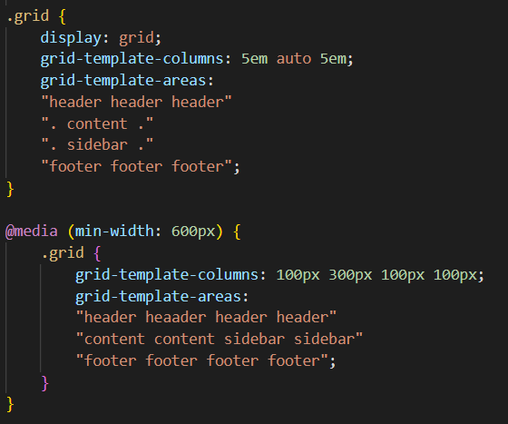
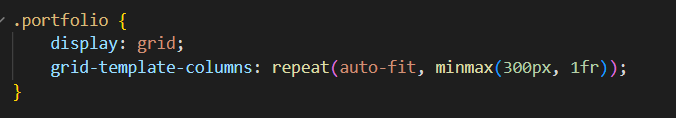

<code comments>
Read my top take-aways from the Scrimba responsive design module. Here's the second part of my checklist for creating a website that is fully responsive.
The responsive design module on Scrimba has cleared up so many CSS questions for me. As I worked through it I made some notes that I have turned into this checklist, that is as much for me as it is for anyone else! There's definitely still a lot of CSS that seems like sorcery, but I'm now feeling a little more confident that I can build something that is actually responsive. I hope you find this useful too.....
Set the line height to a unitless number value that relates to the font size of the element. As a rule of thumb set it to 1.5 (1.5 x the font size)
Use media queries to adjust font size and layout on larger screens. Larger screens will likely need more
white space from padding and margins and navigations should also be different depending on screen size. Use
flex to display a nav in one row for a larger screen and block to display in a column for a small screen.
Common media query break points are as follows, but you should use this as a guide and go with what works for
your specific project:
480px
768px
1024px
1280px
When setting a background image set the size to "cover" so that it adjusts to the size of the screen whilst maintaining its ratio.
Using grid template areas can really help you to visualise your layout. One you have defined your grid areas media queries become much easier to manage. In the below example you can see how easy it is to switch up your layout as the screen size increases:
This MDN article gives some really clear examples
As opposed to using pixels to fix the size of grid columns you can use minmax to allow them to flex depending on the size of the viewport. Even better, set the min in pixels and use the 'fr' unit for the max. The fr unit is fractional and will allocate the element space depending on what is available, so when the screen size is small this will ensure elements stay above the minimum size, but when there is plenty of space the size will be dictated by what is available.
Kevin Powell shared this great tip for achieving a responsove image gallery or similar using the method described above and adding in the auto-fit keyword, which allows your columns to wrap into a new row if there is not enough space to accomodate the min width, which means that without needing any media queries your grid will resize itself!
This css-tricks.com article gives a couple of great examples of making a responsive grid without media queries.
And that's a wrap 😊 I hope there were a few useful nuggets in there. With many thanks to Guil Hernandez and Kevin Powell for for sharing their expertise through the Scrimba responsive design module. Now onwards and upwards to APIs!